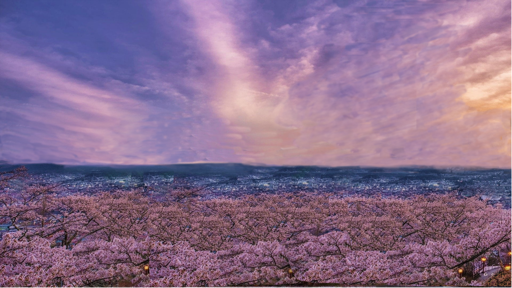
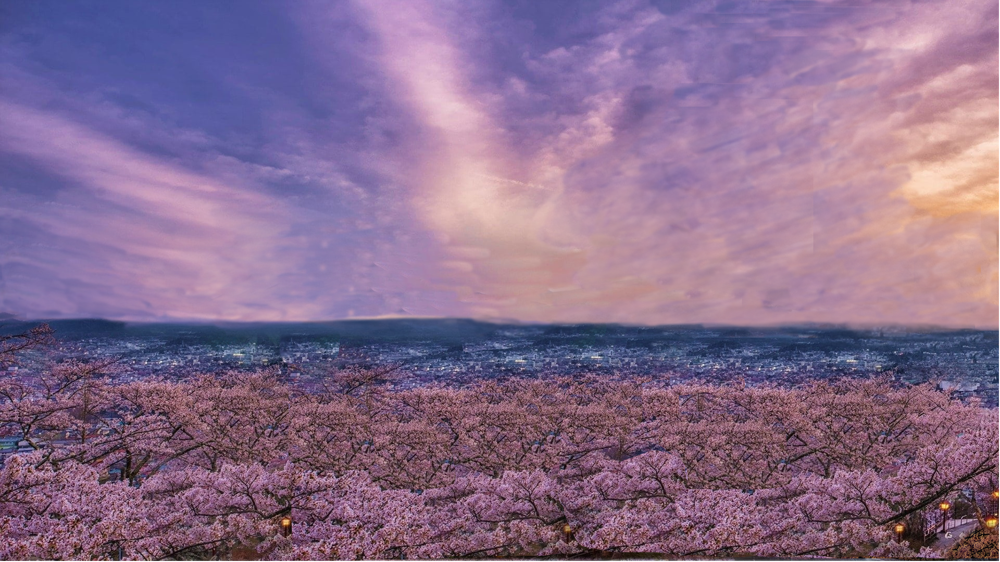
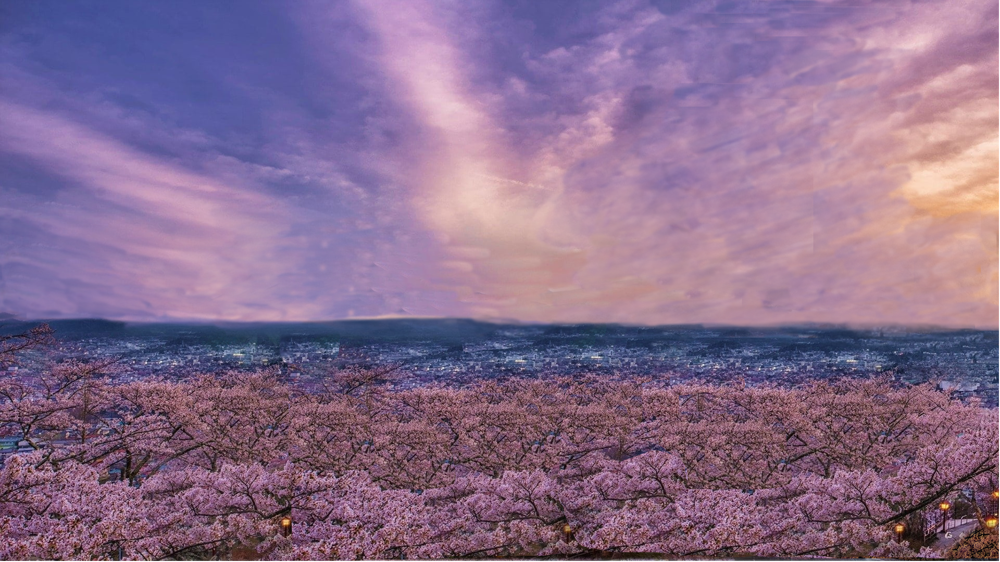
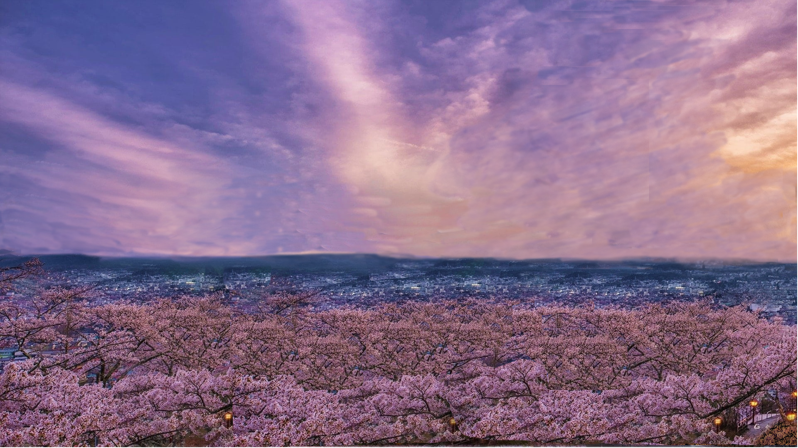

Kyoto (京都), officially Kyoto City (京都市), is the capital city of Kyoto Prefecture in Japan. Located in the Kansai region on the island of Honshu, Kyoto forms a part of the Keihanshin metropolitan area along with Osaka and Kobe. As of 2020, the city had a population of 1.46 million. The city is the cultural anchor of a substantially larger metropolitan area known as Greater Kyoto, a metropolitan statistical area (MSA) home to a census-estimated 3.8 million people.
Kyoto is one of the oldest municipalities in Japan, having been chosen in 794 as the new seat of Japan's imperial court by Emperor Kanmu. The original city, named Heian-kyō, was arranged in accordance with traditional Chinese feng shui following the model of the ancient Chinese capital of Chang'an/Luoyang. The emperors of Japan ruled from Kyoto in the following eleven centuries until 1869. It was the scene of several key events of the Muromachi period, Sengoku period, and the Boshin War, such as the Ōnin War, the Honnō-ji Incident, the Kinmon incident and the Battle of Toba–Fushimi. The capital was relocated from Kyoto to Tokyo after the Meiji Restoration. The modern municipality of Kyoto was established in 1889. The city was spared from large-scale destruction during World War II and as a result, its prewar cultural heritage has mostly been preserved.
Kyoto is considered the cultural capital of Japan and is a major tourist destination. It is home to numerous Buddhist temples, Shinto shrines, palaces and gardens, some of which have been designated collectively as a World Heritage Site by UNESCO. Prominent landmarks include the Kyoto Imperial Palace, Kiyomizu-dera, Kinkaku-ji, Ginkaku-ji, and Kyoto Tower. The internationally renowned video game company Nintendo is based in Kyoto. Kyoto is also a center of higher learning in the country, and its institutions include Kyoto University, the second oldest university in Japan.
Kyoto is located in a valley on the northwestern side of the Yamashiro Plateau, in the part of the mountainous region known as the Tamba highlands. The city spans 1,512.5 square kilometres (583.9 sq mi), and is bordered by the cities of Uji and Otsu to the north, Nantan to the northeast, Yawata to the east, and Nishikyo to the south. The city is situated on a plain, with mountains rising to the north and west. The city is divided into 11 districts, including Shimogyō, Nakagyō, and Higashiyama, which are the most popular tourist destinations. The city is also home to the Kyoto Prefectural Botanical Gardens, which are among the largest in Japan.
Kyoto has a humid subtropical climate (Köppen Cfa) with four distinct seasons. The city receives abundant rainfall throughout the year, with the wettest month being July. The average annual temperature is 15.1 °C (59.2 °F), with the highest average temperature of 25.8 °C (78.4 °F) in August and the lowest average temperature of 4.4 °C (39.9 °F) in January. The average annual precipitation is 1,600 millimetres (63 in), with the wettest month being July with an average of 300 millimetres (12 in). The average annual snowfall is 30 centimetres (12 in), with the snowiest month being January with an average of 10 centimetres (3.9 in).
As of 2019, the population of Kyoto was 1,461,000, with 1,000,000 living in the city proper. The population density was 1,000 persons per km². The total area was 1,512.5 km². The population of the prefecture was 2,612,000 in 2019, with 1,461,000 living in the city proper. The population density was 1,000 persons per km². The total area was 1,512.5 km².
Kyoto is a major economic center in Japan. The city is home to the headquarters of several major Japanese companies, including Nintendo, Kyoto University Press, Kyoto Animation, and Kyoto Seika University. Kyoto is also home to the Kyoto Chamber of Commerce and Industry, the Kyoto Chamber of Commerce and Industry, and the Kyoto Chamber of Commerce and Industry. The city is also home to the Kyoto Chamber of Commerce and Industry, the Kyoto Chamber of Commerce and Industry, and the Kyoto Chamber of Commerce and Industry.
Kyoto is served by two major railway stations, Kyoto Station and Kyoto Shiyakusho-mae Station. The city is also served by the Kyoto Municipal Subway, which operates the Kyoto Municipal Subway Line, the Kyoto Municipal Subway Line, and the Kyoto Municipal Subway Line. The city is also served by the Kyoto Municipal Subway, which operates the Kyoto Municipal Subway Line, the Kyoto Municipal Subway Line, and the Kyoto Municipal Subway Line.
Kyoto is home to several universities and colleges, including Kyoto University, Kyoto University of Art and Design, Kyoto University of Education, Kyoto University of Foreign Studies, Kyoto University of Health Sciences, Kyoto University of Pharmaceutical Sciences, Kyoto University of Science, Kyoto University of Technology, Kyoto University of traditional Japanese Medicine and Kyoto University of the Arts. The city is also home to the Kyoto University of Art and Design, Kyoto University of Education, Kyoto University of Foreign Studies, Kyoto University of Health Sciences, Kyoto University of Pharmaceutical Sciences, Kyoto University of Science, Kyoto University of Technology, Kyoto University of traditional Japanese Medicine and Kyoto University of the Arts.